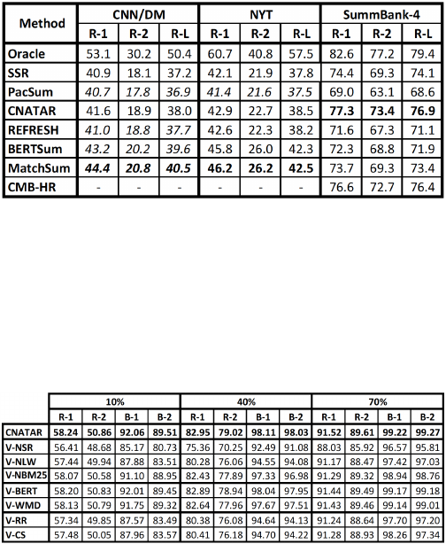

On SummBank-4, CNATAR outperforms all the supervised
models by a large margin, even if MatchSum has tried all
possible candidate outputs for each article in SummBank-4.
The oracle results are computed by selecting the first sentence
with the highest R-1 score, then select the next sentence to
the already selected sentences with the highest R-1 score.
TABLE III: Comparison results (%), where the numbers in
italic are taken from the corresponding papers.
Ablation study. We show that, over SummBank, each
mechanism in CNATAR is necessary for achieving its over-
all performance. In particular, contextual networks, location
weights, and topic-cluster-wise 0-1 knapsack are the most
significant components. Table IV depicts the numerical results,
where V-NSR denotes a variant of CNATAR without con-
TABLE IV: Results from ablation study.
textual networks but using co-occurrences to capture weaker
syntactic relations between words as in SSR [6], V-NLW
denotes a variant without location weight functions, and V-
NBM25 a variant that replaces the use of a BM25 normalizer
with the standard normalizer of sentence length. Moreover,
V-BERT and V-WMD denote two variants that replace the
T5 similarities with, respectively, the cosine similarity of
BERT embedding, and similarities based on Word Mover’s
Distance [24] as in SSR. Finally, V-RR and V-CS denote
two variants that replace the cluster-wise 0-1 knapsack with,
respectively, round-robin selections from clusters as in SSR
and proportional selections based on cluster size.
VI. CONCLUSIONS AND FINAL REMARKS
CNATAR ranks sentences based on context networks and
topic analysis, and achieves the state-of-the-art results. Our
construction of contextual networks, however, only takes ad-
vantage of a few recent NLP tools. More NLP tools may
be leveraged, including part-of-speech tags, role labeling,
and sentiment analysis. Using these extra language features,
it is expected a more appropriate weight can be computed
when merging two edges in constructing a contextual net-
work, instead of assigning an equal weight as in the current
construction. Topic diversity also plays an important role in
ranking sentences, and so it would be interesting to investigate
a better mathematical formulation for the diversity function
and explore other topic clustering algorithms.
REFERENCES
[1] D. Dueck, “Affinity propagation: clustering data by passing messages,”
Ph.D. dissertation, University of Toronto, 2009.
[2] S. Narayan, S. B. Cohen, and M. Lapata, “Ranking sentences for
extractive summarization with reinforcement learning,” in Proc. of
NACCL 2018, Vol. 1, pp. 1747–1759.
[3] Y. Liu, “Fine-tune BERT for extractive summarization,” arXiv preprint
arXiv:1903.10318, 2019.
[4] M. Zhong, P. Liu, Y. Chen, D. Wang, X. Qiu, and X. Huang, “Extractive
summarization as text matching,” arXiv preprint arXiv:2004.08795,
2020.
[5] D. Parveen, M. Mesgar, and M. Strube, “Generating coherent summaries
of scientific articles using coherence patterns,” in Proc. of EMNLP 2016,
pp. 772–783.
[6] H. Zhang and J. Wang, “An unsupervised semantic sentence ranking
scheme for text documents,” Integrated Computer-Aided Engineering,
no. 28, pp. 17–33, 2021.
[7] D. Miller, “Leveraging BERT for extractive text summarization on
lectures,” arXiv preprint arXiv:1906.04165, 2019.
[8] H. Zheng and M. Lapata, “Sentence centrality revisited for unsupervised
summarization,” arXiv preprint arXiv:1906.03508, 2019.
[9] J. M. Kleinberg, “Authoritative sources in a hyperlinked environment,”
in Proc. of SODA 1998, pp. 668–677.
[10] R. A. Hudson, Word grammar. Blackwell Oxford, 1984.
[11] J. A. Hartigan and M. A. Wong, “Ak-means clustering algorithm,”
Journal of the Royal Statistical Society: Series C (Applied Statistics),
vol. 28, no. 1, pp. 100–108, 1979.
[12] M. Honnibal and I. Montani, “spaCy 2: Natural language understanding
with bloom embeddings, convolutional neural networks and incremental
parsing.”
[13] T. Wolf, “State-of-the-art neural coreference resolution for chatbots,”
Blog post, 2017.
[14] J. Devlin, M.-W. Chang, K. Lee, and K. Toutanova, “Bert: Pre-training
of deep bidirectional transformers for language understanding,” arXiv
preprint arXiv:1810.04805, 2018.
[15] G. Jawahar, B. Sagot, and D. Seddah, “What does BERT learn about
the structure of language?” in Proc. of ACL 2019.
[16] C. Raffel, N. Shazeer, A. Roberts, K. Lee, S. Narang, M. Matena,
Y. Zhou, W. Li, and P. J. Liu, “Exploring the limits of trans-
fer learning with a unified text-to-text transformer,” arXiv preprint
arXiv:1910.10683, 2019.
[17] D. Radev et al., “Summbank 1.0 ldc2003t16. web download,” Philadel-
phia: Linguistic Data Consortium, 2003.
[18] R. Nallapati, B. Zhou, C. Gulcehre, B. Xiang et al., “Abstractive text
summarization using sequence-to-sequence rnns and beyond,” arXiv
preprint arXiv:1602.06023, 2016.
[19] A. See, P. J. Liu, and C. D. Manning, “Get to the point: Summariza-
tion with pointer-generator networks,” arXiv preprint arXiv:1704.04368,
2017.
[20] S. Narayan, S. B. Cohen, and M. Lapata, “Don’t give me the details, just
the summary! topic-aware convolutional neural networks for extreme
summarization,” arXiv preprint arXiv:1808.08745, 2018.
[21] C.-Y. Lin, “Rouge: A package for automatic evaluation of summaries,”
in Text summarization branches out, 2004, pp. 74–81.
[22] K. Papineni, S. Roukos, T. Ward, and W.-J. Zhu, “BLEU: a method for
automatic evaluation of machine translation,” in Proc. of ACL 2002, pp.
311–318.
[23] Y. Zhang, M. J. Er, and M. Pratama, “Extractive document summariza-
tion based on convolutional neural networks,” in Proc. of IECON 2016,
pp. 918–922.
[24] M. Kusner, Y. Sun, N. Kolkin, and K. Weinberger, “From word embed-
dings to document distances,” in Proc. of ICML 2015, pp. 957–966.